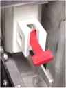
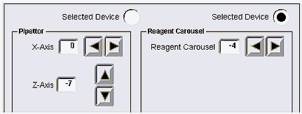
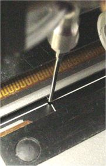
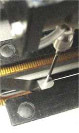

Alignment: Pipettor to Reagent Carousel
-
Loading the Reagent Pack Alignment Tool.
-
Open the front cover and insert the interlock switch bypass key into the front cover interlock switch.

Note: Disable the Utility Assay during the alignment procedure. The Utility assay may attempt to run without notice. The Utility Assay is disabled from within the Maintenance Review screen. Enable the Utility Assay when the alignment process is finished. - From the Main Menu select: Diagnostics > Device Diagnostics > Mechanics.
- In the Mechanics screen select Pipettoras the device and choose Reagent Carouselas the position.
-
Make the Reagent Carousel the "Selected Device".

- Press Home to home the Reagent Carousel, load the reagent pack alignment tool into slot 1 of the Reagent Carousel, then press Move X to Position to move the tool to the Pipettor Aspirate position.
-
Open the front cover and insert the interlock switch bypass key into the front cover interlock switch.
-
Reagent Aspirate Alignment - X
Perform these steps to align the Pipettor to the Reagent Aspirate location.Note:
- Confirm that the Pipettor probe is not bent before performing Pipettor alignments.
- The Access 2 has no Z-home alignment because the Pipettor Z home sensor is mounted to the pipettor carriage.
- In the Mechanics screen make the Pipettor the Selected Device, choose Reagent Carousel as the position, Home the Pipettor, and then press Move X to Position.
-
Remove the interlock switch key to disable the Pipettor motors, rotate the drive gear at the left end of the gantry to manually move the Pipettor down to just above the reagent alignment tool, and then insert the interlock switch key.

Note: Make sure the Pipettor does not move left or right when moving it down. - Use the left/right arrows or the keyboard left/right arrow keys to adjust the probe X-Axis into alignment with the white line on the alignment tool.
- Make the Reagent Carousel the Selected Device, then use the directional keys to align the Reagent Carousel (white line on the tool) to the probe.
- Press: Save Offset to save the new alignment offset values.
-
Remove the interlock switch key to disable the Pipettor motors and then manually move the Pipettor left/right down the length of the white line on the reagent alignment tool.
If the Pipettor probe does not move parallel to the white line on the reagent alignment tool when the Pipettor is moved along its X axis, then:
- Confirm that the Sample/Reagent module is locked into position on its alignment pins.
- Perform the Pipettor "Y" adjustment.
-
When moving the probe along the length of the reagent pack tool, confirm that the pipettor does not touch the reagent storage module cover.
If the Pipettor probe touches the cover, then:
- Confirm that the Sample Reagent module is locked into position on its alignment pins.
- If the module is mounted correctly and the probe might touch the cover when pipetting, then perform the Pipettor "Y" axis adjustment to correct the interference.
- Confirm that the clear reagent access cover slides freely. Clean the cover and the slide rails if necessary.
-
Reagent Aspirate - Z
Perform these steps to align the Pipettor to the Reagent Aspirate location.
- In the Mechanics screen make the Pipettor the Selected Device, choose: Reagent Carousel as the position, Home the Pipettor, and then press: Move Z to Position.
-
Insert a bent 0.010 inch feeler gauge between the Pipettor probe and the alignment tool, then use the touch screen directional keys to adjust the probe Z-Axis to the correct height.

Note: When the alignment is correct the feeler gauge should fit between the probe and the Alignment Tool with slight resistance -
Press
Save Offset to save the new alignment offset values.
Note: Homing without saving will return the alignments to their original values and erase any changes.
- Make the Reagent Carousel the Selected Device, then press Home to move the reagent pack tool to the load/unload position, and then remove the reagent pack alignment tool.
Go back to the parent topic to perform any other necessary alignments and for verification steps once all alignments are complete.